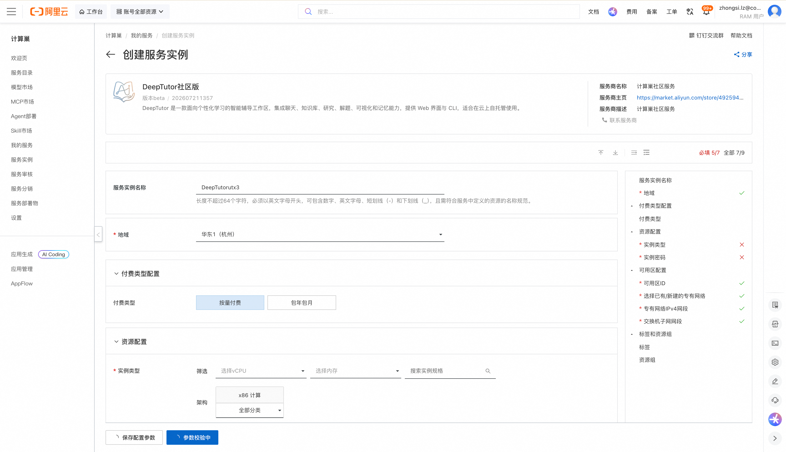
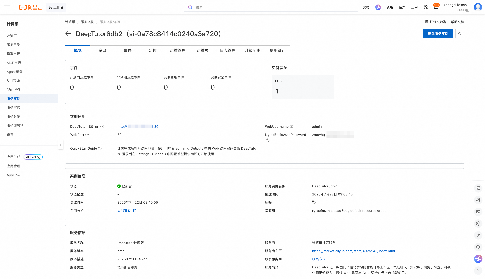
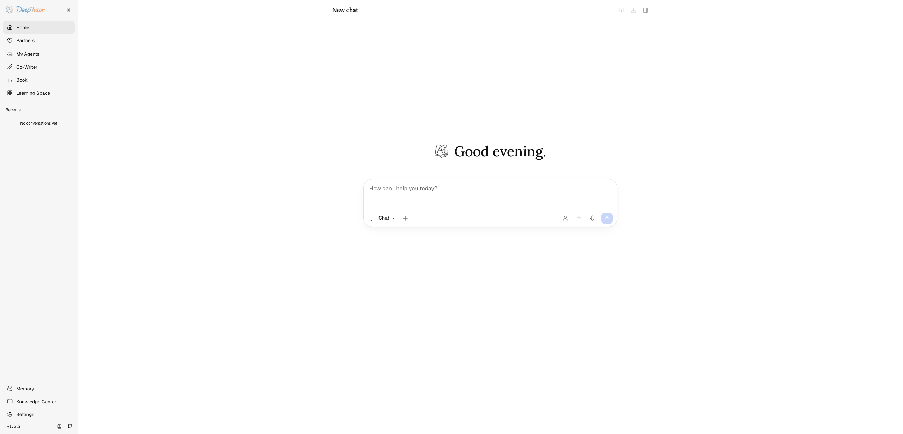
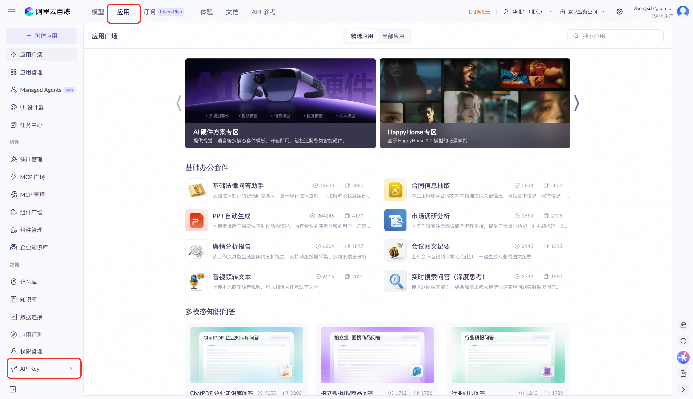
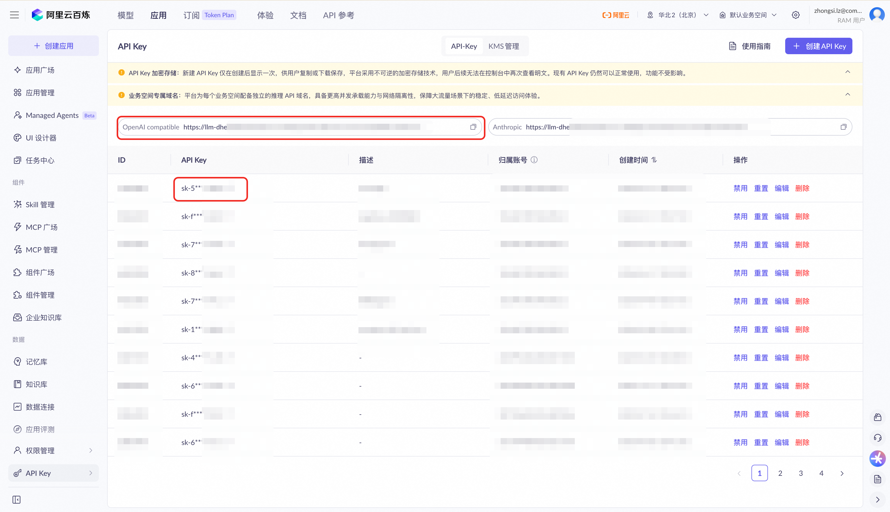
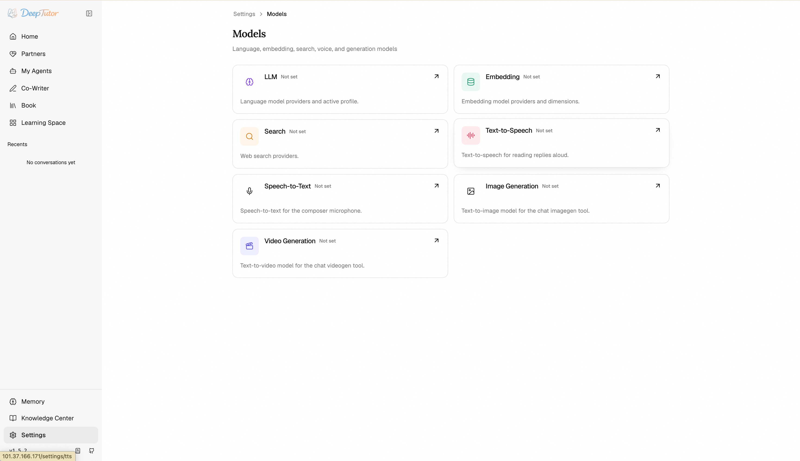
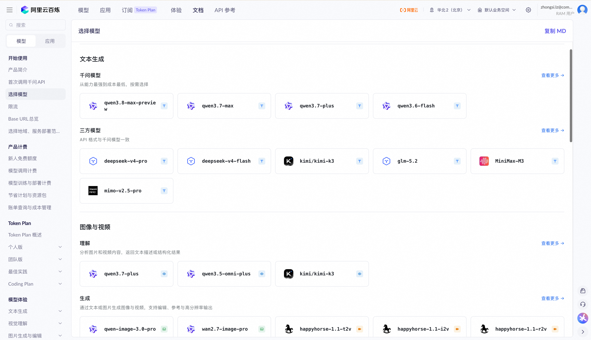
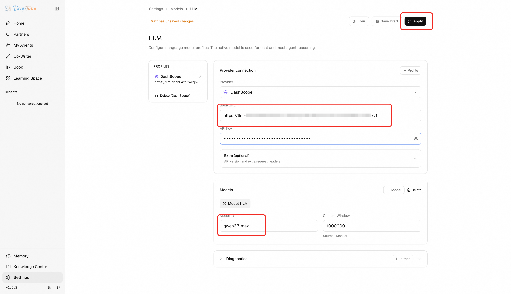

DeepTutor社区版 部署文档
概述
DeepTutor社区版 是一款面向个性化学习的智能辅导工作区。通过阿里云计算巢服务，您可以快速部署 DeepTutor社区版，实现开箱即用。
部署流程
1. 创建服务实例
访问 DeepTutor社区版 服务部署链接，按提示填写部署参数：

2. 确认订单并创建
参数填写完成后可以看到对应询价明细，确认参数后点击 下一步：确认订单。确认订单完成后同意服务协议并点击 立即创建 进入部署阶段。
3. 等待部署完成
等待部署完成后进入服务实例管理，在控制台找到 DeepTutor社区版 访问链接。

4. 访问服务
部署完成后点击web安全代理，登录 DeepTutor；登录后在 Settings → Models 中配置模型提供商即可开始使用。请注意，根据您使用功能的不同配置的模型类别也有差异。例如，如果您需要使用知识库能力，则需要配置向量模型。您至少需要配置对话大模型才能体验最基础的能力。

如何获取和设置百炼大模型
- 登录 百炼，点击“应用” -> “API KEY”

- 记录您的api key以及页面上的OpenAI compatible（即大模型访问地址）

- 进入DeepTutor社区版，在Settings → Models中配置百炼大模型。Settings -> Models

您需要根据您使用的功能设置对应的大模型，例如对话大模型、向量模型、多模态语音大模型、多模态图像大模型等。模型列表您可以从模型列表获取。
- 填写模型信息后，点击apply即可生效

官方文档
更多信息请访问官方文档：HKUDS/DeepTutor
© 2009-2022 Aliyun.com 版权所有